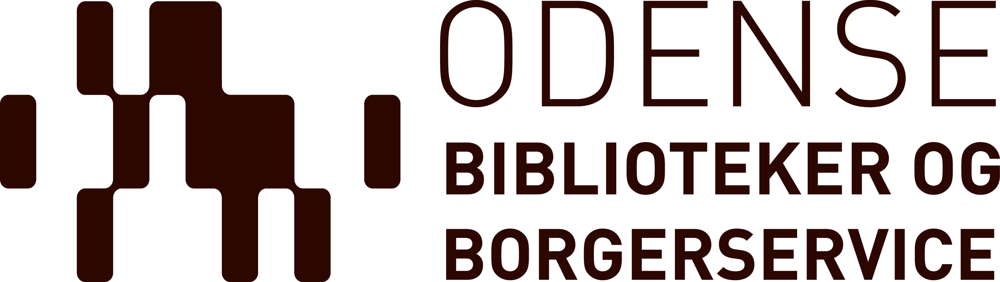

Biblioteket har en masse muligheder for, at du kan få litteratur og rejseguides med dig på din telefon eller tablet.
Vi har også digitale magasiner og sprogkurser. Lige til at studere i flyveren eller i liggestolen, der hvor sommerferien går hen. Så hvis du skal ud at rejse har vi masser af gode muligheder for at du kan finde noget at læse. Kig under online bibliokteket for at finde hvad vi har at tilbyde til dig, da vi har massere af forskellige tilbud er der helt sikkert noget for enhver smag.